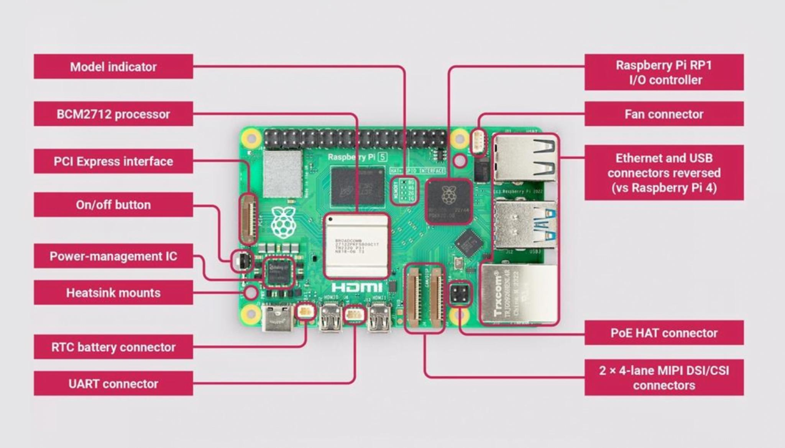
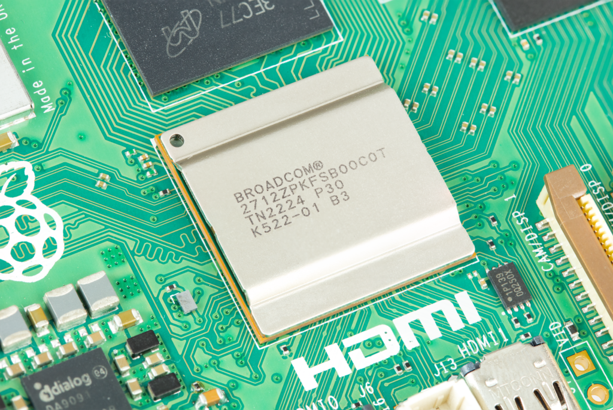
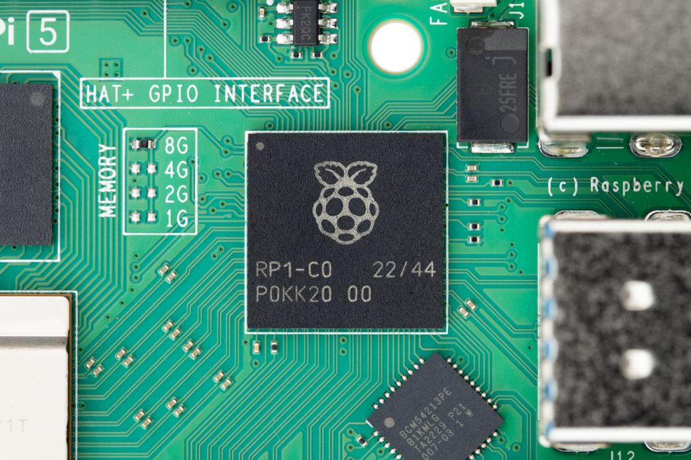

중앙 큰 패키지. Cortex-A76 CPU/GPU 처리부.
오른쪽 검은 I/O controller. USB/Ethernet/GPIO/MIPI 담당.
왼쪽 세로 FFC. PCIe 2.0 x1, NVMe/accelerator 후보.
오른쪽 아래 두 세로 FFC. CIS + MIPI DVS 직결 우선.
오른쪽 포트 스택. 유선 전송과 USB bridge 장치용.
상단 40-pin header. trigger/PPS/sync/interrupt 연결.
전원 관리 IC. 주변장치 동시 사용 시 전원 안정성 핵심.
왼쪽 아래 전원 입력. 5V/5A USB-C PD 권장.
왼쪽 위 무선 모듈. Wi-Fi 5 300Mb/s 표기, Bluetooth 5.0/BLE.


실물 보드 사진에서 확인할 포인트
위 실물 사진은 DVS-CIS 합성 장비를 만들 때 더 직관적이다. 문서상의 블록 다이어그램은 BCM2712, RP1, MIPI, USB, PCIe 역할을 보여주지만, 실제 제작에서는 어느 케이블을 어디에 꽂고 열과 전원을 어떻게 처리할지가 더 중요하다.
| 사진에서 볼 부분 | 주요 스펙 | DVS-CIS 합성 장비에서의 의미 |
|---|---|---|
| 보드 중앙 SoC/방열 영역 | Broadcom BCM2712, quad-core Arm Cortex-A76 64-bit, 2.4GHz | event accumulation, lightweight reconstruction, frame fusion, web preview orchestration이 몰리는 영역이다. 지속 부하에서는 active cooler가 사실상 필수다. |
| GPU/영상 처리 | VideoCore VII GPU, OpenGL ES 3.1, Vulkan 1.3, 4Kp60 HEVC decode | 고품질 neural interpolation 전용 NPU는 아니다. 표시, decode, 일부 GPU compute 실험은 가능하지만 200FPS 이상 합성은 C++/NEON 또는 외부 가속기 검토가 필요하다. |
| 메모리 | LPDDR4X-4267, 1GB/2GB/4GB/8GB/16GB 모델 | DVS event buffer, CIS frame buffer, accumulation map, encoder queue가 동시에 올라간다. 실험은 8GB 이상, 긴 event 저장과 웹 데모 병행은 16GB가 유리하다. |
| CAM/DISP FFC 2개 | 2x 4-lane MIPI transceiver, CSI-2 camera 또는 DSI display로 선택 사용 | CIS는 MIPI CSI-2로 연결하는 것이 가장 안정적이다. 두 포트를 모두 camera로 쓰면 stereo/dual CIS 가능, 하나는 display로 쓰는 구성도 가능하다. |
| USB 3.0 포트 | 2x USB 3.0, 각 5Gbps급 SuperSpeed 포트. 추가로 2x USB 2.0 제공 | MIPI가 없는 USB형 DVS 카메라 또는 FPGA/USB bridge를 붙일 때 쓰는 대안이다. 변환기가 들어가면 latency, packetization overhead, CPU interrupt 부하가 늘어 MIPI 직결보다 불리하다. |
| Ethernet | Gigabit Ethernet, PoE+ HAT 지원 | 실시간 상태 페이지, 생성 MP4 배포, event summary 전송은 Wi-Fi보다 유선이 안정적이다. 원격 장비는 영상 전체보다 event crop, 판단 결과, 압축 클립 위주로 보내는 것이 낫다. |
| Wi-Fi / Bluetooth | 2.4/5GHz dual-band 802.11ac Wi-Fi 5, 공식 표기 300Mb/s. Bluetooth 5.0/BLE. | 설정, SSH, 저대역 telemetry에는 편리하다. 300Mb/s는 무선 링크 기준 수치라 실제 TCP 처리량과 지연은 낮고 흔들릴 수 있다. 고속 DVS event stream 또는 영상 전송은 Gigabit Ethernet을 우선한다. |
| 40-pin GPIO 헤더 | 3.3V GPIO, UART, SPI, I2C, I2S, PWM 등 mux 기능 | DVS와 CIS의 trigger, PPS, external sync, interrupt line 연결에 쓴다. 전압은 3.3V 기준이라 5V 센서는 level shifter가 필요하다. |
| PCIe FFC 커넥터 | 외부 PCIe 2.0 x1, HAT/adapter 필요 | NVMe 저장장치 또는 AI accelerator HAT 후보. 다만 x1 대역폭이라 event 저장과 경량 가속에는 좋지만 대형 GPU처럼 쓰는 구조는 아니다. |
| microSD | SDR104 high-speed mode 지원 | OS와 설정에는 충분하지만 장시간 raw event/video 기록은 NVMe가 낫다. microSD에 고속 쓰기를 계속하면 프레임 드롭과 수명 문제가 생길 수 있다. |
| USB-C 전원 입력 | 5V/5A USB-C Power Delivery 권장. 5A 전원 사용 시 downstream USB peripheral에 최대 1.6A, 3A 전원 사용 시 600mA 제한. | 카메라, DVS, NVMe, 팬, accelerator를 동시에 쓰면 전원 margin이 중요하다. 저전원 어댑터는 USB 재연결, throttling, 프레임 드롭의 원인이 된다. |
따라서 실험용 배선의 정답은 CIS camera와 MIPI 출력 DVS를 각각 CAM/DISP MIPI 포트에 물리고, 동기화 신호는 GPIO/PPS로 맞추며, 결과 전송은 Ethernet으로 분리하는 구성이다. USB는 MIPI를 직접 받을 수 없는 DVS 모듈에서 변환기나 FPGA bridge를 쓸 때의 fallback으로 보는 것이 맞다.
Top-Level Block Diagram
+-------------------------------+
| Broadcom BCM2712 AP |
| - 4x Cortex-A76 @ 2.4GHz |
| - VideoCore VII GPU |
| - LPDDR4X-4267 controller |
| - Dual micro-HDMI 4Kp60 |
| - 4Kp60 HEVC decode |
+---------------+---------------+
|
PCIe 2.0 x4 internal link
|
+---------------v---------------+
| RP1 I/O Controller |
| - USB 3.0 / USB 2.0 |
| - Gigabit Ethernet MAC |
| - 2x 4-lane MIPI transceivers |
| - GPIO, UART, SPI, I2C, PWM |
+-----+------------+------------+
| |
+-----------------+ +------------------+
| |
USB / Ethernet / GPIO CAM/DISP0, CAM/DISP1
CSI-2 camera or DSI display
External PCIe FPC:
BCM2712 -> PCIe 2.0 x1 connector for NVMe / accelerator HATs
Pi 5의 중요한 특징은 RP1이다. RP1은 standalone MCU가 아니라 Pi 5 보드에 들어간 I/O controller이며, BCM2712와 internal PCIe 2.0 x4 link로 연결된다. 외부 확장용 PCIe는 별도의 FPC connector로 PCIe 2.0 x1이 제공된다.
Performance Summary
| Subsystem | Specification | DVS-CIS Fusion Meaning |
|---|---|---|
| CPU | Broadcom BCM2712, quad-core 64-bit Arm Cortex-A76 @ 2.4GHz | Python/NumPy PoC, orchestration, lightweight C++ fusion 가능. 200FPS 이상은 C++/NEON 최적화 필요. |
| GPU | VideoCore VII, OpenGL ES 3.1, Vulkan 1.3 | GPU compute 가능성을 검토할 수 있지만 일반 CUDA 환경은 아님. Vulkan compute/GL path는 개발 난도가 있음. |
| Memory | LPDDR4X-4267, 1GB/2GB/4GB/8GB/16GB variants | event buffer, frame buffer, encode buffer 동시 운용. 8GB 이상 권장. |
| Video decode | 4Kp60 HEVC decoder | 입력 영상 decode에는 유리하나, 실시간 합성 병목은 event accumulation과 encode handoff. |
| Display | Dual 4Kp60 micro-HDMI with HDR support | 데모 모니터링/대시보드에 충분. |
| I/O controller | RP1 via internal PCIe 2.0 x4 to BCM2712 | USB, Ethernet, MIPI, GPIO를 RP1이 담당. 고속 I/O 부하와 CPU 연산을 분리하는 구조. |
Broadcom BCM2712 Arm Cortex-A76 Quad-Core
Raspberry Pi 5의 CPU 블록은 Broadcom BCM2712 안에 들어간 4개의 Arm Cortex-A76 코어다. 스마트폰 SoC처럼 big core와 little core를 섞은 8코어 구조가 아니라, 같은 계열의 A76 코어 4개를 2.4GHz로 쓰는 단순한 대칭형 쿼드코어 구성에 가깝다.
Broadcom BCM2712 Application Processor
+----------------------+ +----------------------+
| Cortex-A76 Core 0 | | Cortex-A76 Core 1 |
| 64-bit Armv8-A | | 64-bit Armv8-A |
| out-of-order | | out-of-order |
+----------+-----------+ +----------+-----------+
| |
+----------+-----------+ +----------+-----------+
| Cortex-A76 Core 2 | | Cortex-A76 Core 3 |
| 64-bit Armv8-A | | 64-bit Armv8-A |
| out-of-order | | out-of-order |
+----------+-----------+ +----------+-----------+
| |
+-----------+--------------+
|
shared memory subsystem
|
LPDDR4X-4267 / VideoCore VII / PCIe / RP1 I/O
Arm Cortex-A Roadmap Position
1st-gen DynamIQ Cortex-A76
2nd-gen high-performance DynamIQ Cortex-A77
3rd-gen Cortex-A78 Cortex-X / newer big cores
A76은 2018년에 등장한 프리미엄 모바일/PC 지향 고성능 코어다. Arm은 A76을 “laptop-class performance with mobile efficiency” 방향의 코어로 설명하며, 이전 세대보다 단일 스레드 성능과 에너지 효율을 높인 제품군으로 포지셔닝했다.
| 비교 대상 | CPU 구조 | Pi 5와의 차이 |
|---|---|---|
| Raspberry Pi 5 BCM2712 | 4x Cortex-A76 @ 2.4GHz | 모든 코어가 같은 A76인 쿼드코어. 서버/데스크톱처럼 작업을 단순 분산하기 좋지만 little core가 없어 저전력 대기 효율은 스마트폰식 SoC보다 단순하다. |
| Huawei Kirin 980 계열 스마트폰 | Cortex-A76 기반 big/middle cores + Cortex-A55 little cores | 2018 플래그십 스마트폰은 A76을 최고성능 코어로 쓰고, A55를 저전력 작업에 썼다. Pi 5는 A55가 없어서 구조는 더 단순하지만 전력 관리 선택지는 적다. |
| Qualcomm Snapdragon 855 계열 | Kryo 485 CPU, Arm Cortex technology 기반, Prime/Performance/Efficiency 계층 | 스마트폰은 CPU, GPU, ISP, DSP/NPU, modem까지 강하게 통합한다. Pi 5는 범용 Linux SBC라 I/O와 개발 자유도는 높지만 AI/DSP 전용 블록은 약하다. |
| 최신 Cortex-X/A7xx 스마트폰 | Cortex-X 또는 최신 Cortex-A7xx big core + efficient cores | 순수 CPU single-thread와 AI 가속은 최신 플래그십 폰이 앞선다. Pi 5는 가격, GPIO/MIPI/PCIe 접근성, Linux 제어성이 장점이다. |
DVS-CIS 합성 관점에서는 A76 네 코어를 입력 수집, event accumulation, frame blending, encoding handoff로 나눠 쓰는 구조가 합리적이다. 다만 event accumulation은 random scatter가 많아 CPU cache miss가 커지므로, Python보다 C++ tile histogram, NEON vectorization, lock-free ring buffer를 우선 적용해야 한다.
Interface Specifications
| Interface | Raspberry Pi 5 Spec | Notes For This Project |
|---|---|---|
| MIPI camera/display | 2x 4-lane MIPI transceivers, each usable as CSI-2 camera or DSI display | CIS camera input에 핵심. 두 커넥터를 모두 camera로 쓰거나 camera+display 조합 가능. |
| USB | 2x USB 3.0 ports, simultaneous 5Gbps operation; 2x USB 2.0 ports | USB형 DVS 카메라나 FPGA/USB bridge 입력에는 사용 가능. 단, MIPI 출력 DVS라면 USB 변환보다 MIPI CSI-2 직결이 속도와 지연 측면에서 유리. |
| Ethernet | Gigabit Ethernet with PoE+ support via HAT | 웹 대시보드, event packet 전송, remote monitoring에 사용. |
| PCIe external | PCIe 2.0 x1 FPC connector, adapter/HAT required | NVMe 저장장치 또는 AI accelerator 연결 가능. 외부 대역폭은 x1 한계가 있음. |
| microSD | High-speed SDR104 mode support | OS/간단 저장에는 충분하지만 event/video 장기 저장은 NVMe 권장. |
| GPIO | Raspberry Pi 40-pin header, 3.3V GPIO | DVS/CIS trigger, PPS, external sync, interrupt line 연결에 사용. |
| Low-speed buses | UART, SPI, I2C, I2S, PWM via GPIO mux | sensor control, IMU, temperature sensor, external MCU, lens control 등에 사용. |
| Power | 5V/5A USB-C with Power Delivery support | 카메라, USB 센서, NVMe, HAT 사용 시 전원 margin 중요. Active cooling 권장. |
| Wi-Fi | 2.4/5GHz dual-band 802.11ac Wi-Fi 5, official 300Mb/s link-class figure. 실제 처리량은 AP, 거리, 채널폭, 간섭에 따라 낮아짐. | SSH, dashboard, telemetry에는 충분하다. 실시간 DVS event stream과 CIS 영상 동시 전송은 지연 변동이 커서 Ethernet 권장. |
| Bluetooth | Bluetooth 5.0 / BLE | 키보드, 설정 장치, 저속 센서 제어에는 적합하지만 영상 또는 고속 event 전송 경로로는 부적합. |
MIPI CSI-2 / DSI Interface Detail
Raspberry Pi 5의 CAM/DISP0, CAM/DISP1은 각각 22-pin 0.5mm FFC 커넥터이며, 각 포트가 4-lane MIPI transceiver로 동작한다. 같은 커넥터를 CSI-2 camera 입력 또는 DSI display 출력으로 선택해 쓸 수 있다. DVS가 MIPI CSI-2 출력을 지원한다면 USB 변환기보다 이 포트에 직접 연결하는 구성이 지연과 대역폭 측면에서 유리하다.
| 항목 | 스펙 | DVS-CIS 설계 의미 |
|---|---|---|
| Connector | 22-pin FPC/FFC, 0.5mm pitch, Raspberry Pi 5 CAM/DISP0 and CAM/DISP1 | Pi 5용 22-pin 케이블과 센서 보드 pinout 호환성을 먼저 확인해야 한다. 15-pin 변환 케이블을 쓰면 lane 수가 줄 수 있다. |
| Lane 구성 | 1 clock differential pair + up to 4 data differential pairs | clock pair는 타이밍 기준, data lane 0~3은 payload를 분산 전송한다. 4-lane을 모두 쓰면 2-lane 대비 대역폭이 두 배다. |
| Lane 속도 | Pi 5 CSI-2 receiver 기준 최대 1.5Gbps per lane로 보는 것이 현실적 | 4-lane 원시 D-PHY 대역폭은 약 6Gbps다. 실제 사용 가능 payload는 blanking, packet header, ECC/CRC, ISP 경로 병목 때문에 이보다 낮다. |
| 2-lane 대역폭 | 1.5Gbps x 2 = 3Gbps raw D-PHY | 저해상도 CIS 또는 event density가 낮은 DVS에는 가능하지만, 고속/고해상도 센서는 fps를 낮춰야 할 수 있다. |
| 4-lane 대역폭 | 1.5Gbps x 4 = 6Gbps raw D-PHY | DVS를 MIPI로 직접 받을 때 목표 구성이다. CIS와 DVS를 동시에 쓰려면 각 센서를 별도 CAM/DISP 포트에 배정한다. |
| Control bus | I2C SCL/SDA, 3.3V pull-up on Raspberry Pi side | sensor register 설정, exposure/gain, mode 전환, DVS event mode 설정에 사용한다. |
| GPIO control | CAM_IO0, CAM_IO1, bidirectional 3.3V GPIO | power enable, reset, trigger, LED, sync 보조 신호로 쓸 수 있다. 센서 보드별 기능 매핑이 다르다. |
| 전원 | 3.3V supply pin available on connector | 소형 카메라 모듈 제어 전원에는 쓰지만, 별도 DVS 보드가 전류를 많이 먹으면 외부 전원을 설계하는 편이 안전하다. |
22-pin CSI connector pinout
| Pin | Name | 역할 | Direction / Type |
|---|---|---|---|
| 1 | GND | Ground | Ground |
| 2 | CAM_DN0 | D-PHY data lane 0 negative | Input, D-PHY |
| 3 | CAM_DP0 | D-PHY data lane 0 positive | Input, D-PHY |
| 4 | GND | Ground between high-speed pairs | Ground |
| 5 | CAM_DN1 | D-PHY data lane 1 negative | Input, D-PHY |
| 6 | CAM_DP1 | D-PHY data lane 1 positive | Input, D-PHY |
| 7 | GND | Ground between high-speed pairs | Ground |
| 8 | CAM_CN | D-PHY clock lane negative | Input, D-PHY |
| 9 | CAM_CP | D-PHY clock lane positive | Input, D-PHY |
| 10 | GND | Ground | Ground |
| 11 | CAM_DN2 | D-PHY data lane 2 negative | Input, D-PHY |
| 12 | CAM_DP2 | D-PHY data lane 2 positive | Input, D-PHY |
| 13 | GND | Ground between high-speed pairs | Ground |
| 14 | CAM_DN3 | D-PHY data lane 3 negative | Input, D-PHY |
| 15 | CAM_DP3 | D-PHY data lane 3 positive | Input, D-PHY |
| 16 | GND | Ground | Ground |
| 17 | CAM_IO0 | GPIO, often power enable or reset | Bidirectional, 3.3V |
| 18 | CAM_IO1 | GPIO, often clock, LED, trigger, or reset | Bidirectional, 3.3V |
| 19 | GND | Ground | Ground |
| 20 | SCL | I2C clock for sensor control | Bidirectional, 3.3V |
| 21 | SDA | I2C data for sensor control | Bidirectional, 3.3V |
| 22 | 3V3 | 3.3V supply | Output |
Bandwidth calculation
raw_mipi_bandwidth = lane_count * lane_rate Pi 5 2-lane raw = 2 * 1.5Gbps = 3.0Gbps Pi 5 4-lane raw = 4 * 1.5Gbps = 6.0Gbps sensor_payload = width * height * bits_per_pixel * fps required_lane_rate = sensor_payload / lane_count / protocol_efficiency
예를 들어 RAW10 1920x1080 200FPS는 순수 pixel payload만 약 4.15Gbps다. 4-lane이면 lane당 약 1.04Gbps라 이론상 범위 안에 들어오지만, blanking과 packet overhead, ISP/driver 경로 병목을 포함하면 여유가 작아진다. DVS는 일반 frame sensor와 다르게 event density에 따라 payload가 변하므로, 최악 이벤트율 기준으로 lane 수와 packet format을 잡아야 한다.
- MIPI differential pair는 P/N 극성이 맞아야 하며 lane swap 지원 여부는 센서/드라이버에 따라 다르다.
- 고속 D-PHY 신호라 케이블 길이, 임피던스, 접지, bend radius가 안정성에 직접 영향을 준다.
- DVS를 MIPI로 붙일 때는 CSI-2 packet의 data type, virtual channel, timestamp embedding 방식을 드라이버에서 해석해야 한다.
- CIS와 DVS를 동시에 쓰려면 CAM/DISP0, CAM/DISP1에 각각 배정하고 GPIO/PPS로 공통 시간 기준을 넣는 구성이 가장 명확하다.
CIS Camera Interface Detail
Pi 5의 CIS 카메라 입력은 MIPI CSI-2를 사용한다. 보드에는 2개의 4-lane MIPI transceiver가 있으며, 각 커넥터는 camera 또는 display 용도로 사용할 수 있다. 공식 제품 설명에서는 이 커넥터를 camera/display transceiver라고 부른다.
CIS sensor -> MIPI CSI-2 data lanes -> Pi 5 CAM/DISP connector -> RP1 MIPI transceiver -> BCM2712 / ISP path -> application frame buffer
- 카메라 모듈은 Pi 5용 22-pin FFC/adapter compatibility를 확인해야 한다.
- 두 MIPI 포트 모두 camera로 쓰면 dual-CIS 입력 실험 가능.
- DVS가 MIPI CSI-2를 지원하면 DVS도 MIPI에 직접 연결하는 것이 우선이다.
- DVS를 USB로 연결하려면 USB형 DVS 카메라 또는 FPGA/USB 변환기가 필요하며, 변환 지연과 처리량 저하가 생길 수 있다.
- DVS와 CIS의 timestamp sync는 GPIO trigger/PPS 또는 host monotonic clock 보정이 필요하다.
DVS-CIS Fusion Wiring Example
Recommended PoC wiring: MIPI CAM0: CIS camera, 50FPS or burst capture MIPI CAM1: DVS event sensor, CSI-2 event/frame-like packet stream Optional USB 3.0: USB DVS camera or FPGA/USB bridge only GPIO: trigger / sync pulse / event interrupt Ethernet: dashboard and result upload NVMe over PCIe x1: optional raw event + video storage Cooling: active cooler or case fan
이 구성은 Pi 5에서 PoC를 만들기에 적합하다. 단, 200 synthesis FPS 이상 제품 목표에서는 Pi 5 CPU만으로는 부족하므로 C++/NEON, GPU compute, 또는 IQ8/Jetson/FPGA-assisted SoC로 확장해야 한다.
Pi 5 In This Project: Strengths And Limits
Python, OpenCV, web server, camera stack을 빠르게 붙여 실험 가능.
MIPI CIS, MIPI DVS, Ethernet dashboard, GPIO sync를 한 보드에서 구성 가능. USB DVS는 bridge가 필요한 대안.
고품질 neural interpolation을 온디바이스 200FPS로 돌리기에는 AI 가속 구조가 부족.
DVS event accumulation은 random write가 많아 Python/NumPy에서 병목이 큼.
장시간 합성/인코딩/USB 입력 부하에서는 active cooling과 안정 전원 필요.
Pi 5는 PoC와 dashboard, 저해상도 preview용. 제품은 IQ8/Jetson/FPGA급으로 이전.
References
- Raspberry Pi 5 product specification
- Raspberry Pi 5 launch article: BCM2712, RP1, DA9091 architecture
- Arm Cortex-A76 product page: second-generation high-performance DynamIQ CPU
- Arm client CPU roadmap: Cortex-A76, Deimos, Hercules context
- Huawei Mate 20 / Kirin 980: Cortex-A76-based smartphone SoC comparison
- Qualcomm Snapdragon 855: Kryo 485, AI engine, smartphone SoC comparison
- Raspberry Pi camera documentation: Pi 5 CAM/DISP location and 22-pin CSI pinout
- Raspberry Pi forum note: Pi 5 CSI-2 lane rate and ISP-FE bandwidth discussion
- Raspberry Pi RP1 I/O controller documentation
- Raspberry Pi hardware documentation, PCIe connector